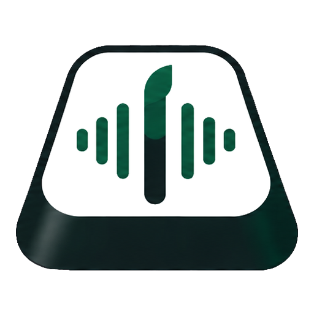

A reply, without leaving the message.
An email that should have taken one breath.
A chat reply you already said out loud.
A note, a command, a line of documentation.
Windows x64. Version 0.2.0. Unsigned.
Speak naturally. KeyReed turns your words into polished text and inserts it directly into your active application on Windows.
Installer 18,589,388 bytes (~17.7 MB). Speech models download on demand after install. Windows may warn because the file is not signed.

Idle
Ready when you are.
An email that should have taken one breath.
A chat reply you already said out loud.
A note, a command, a line of documentation.
This is an illustration. It does not open your microphone.
Idle. Nothing is recording.
I checked the server but I am not able to find what is the reason for the website going down.
I checked the server but couldn't identify the reason the website is going down.
Samples are illustrations, not a recording from this page. Spoken symbols such as "forward slash" apply only in Terminal / Code. A code editor is classified as Technical unless you choose that mode yourself.
A reply, without leaving the message.
The sentence you already said.
A thought before it cools.
A command, with symbols only in that mode.
The finished text goes to the clipboard. Paste with Ctrl+V. That is not a promise that every program accepts a paste the same way.
A Windows tray and floating-control voice input application. It records while you hold a shortcut, transcribes, polishes, and automatically inserts the text into your active window.
Hold the shortcut, speak, release. The default key is Right Ctrl. Toggle-to-talk is a separate setting.
Yes. Auto Insert is the default delivery mode. KeyReed types Unicode text directly into the focused field and automatically falls back to the clipboard if the target is a password field, elevated, or no longer focused. You can also choose Clipboard Only or Ask Before Inserting.
No. The usual path is the clipboard and Ctrl+V. Some programs ignore a paste. That is not universal compatibility.
The small installer does not include speech models. The tray can download the default model. The full archive includes the default speech model and the default grammar model. The offline profile does not call a cloud service.
No. The packaged build runs the local models on CPU.